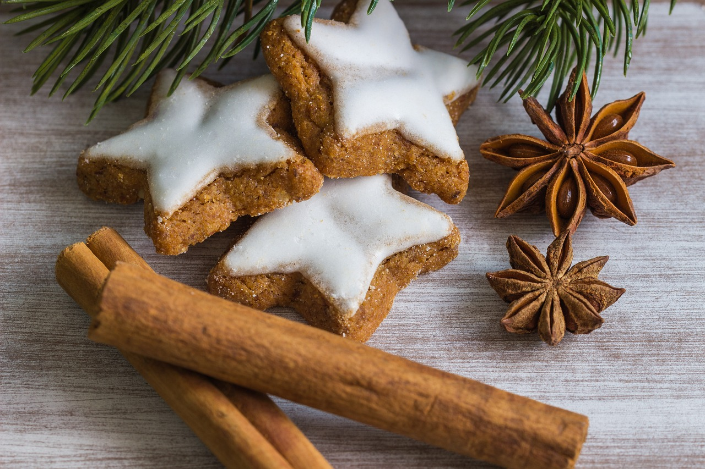

Cinnamon Cookies Recipe

Description:
Easy-to-make, Christmas' classic Cinnamon Cookies.
Ingredients:
- 1 cup of sugar
- Half cup of butter
- 1 large egg
- 1 teaspoon vanilla extract
- 1 and a half cups of flour
- 1 and a half teaspoons of cinnamon
- 1 teaspoon baking powder
- 1/4 teaspoon of salt
- (optional) Cinnamon sugar
Steps:
- In a mixer bowl, cream together sugar and butter; beat in egg and vanilla.
- Combine flour, cinnamon, baking powder and salt.
- Add to butter mixture and blend well.
- Cover and refrigerate 2 hours or till firm enough to roll into balls.
- Shape dough into small balls about 3/4-inch in diameter.
- Roll in cinnamon sugar to coat.
- Set cookies 1-inch apart on lightly greased cookie sheets.
- Bake at 350° for 10 minutes or till the edges are lightly browned.
- Cool slightly on pans, then remove to racks to cool completely.